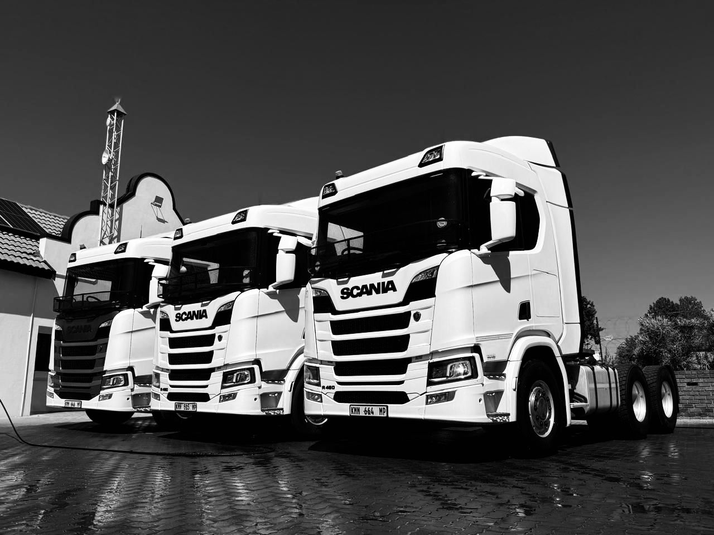

Delivering excellence across South Africa with modern logistics and distribution services.
Reliable. Disciplined. Performance-Driven Logistics Solutions.
Company Overview
Fuze Holdings & Logistics is a 100% black-owned, youth-led logistics and transport company
specializing in bulk commodity transportation, mining logistics, and fleet-based operational
support across South Africa.
Founded by young entrepreneur Itumeleng Dylan Ngcobo, the company was established
with a vision to build a modern, high-performance logistics brand capable of delivering reliable
and scalable transport solutions to mining houses, industrial clients, and supply chain operators.
The company focuses primarily on side tipper transportation services for coal, aggregates, and mining materials,
supported by disciplined operational systems, fuel management infrastructure, route optimization,
and technology-driven fleet management.
Fuze Holdings & Logistics is positioned to become one of South Africa’s emerging industrial transport operators
by combining operational excellence, safety, reliability, and empowerment-focused growth.
Fast and efficient delivery solutions across the country.
Temperature-controlled transport for sensitive products.
Reliable long-distance transport with modern fleet tracking.
Our fleet is built for reliability, performance, and nationwide coverage.
Equipped with advanced tracking systems and maintained to the highest standards.